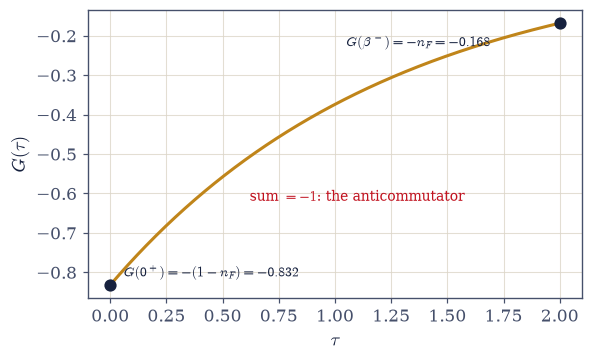
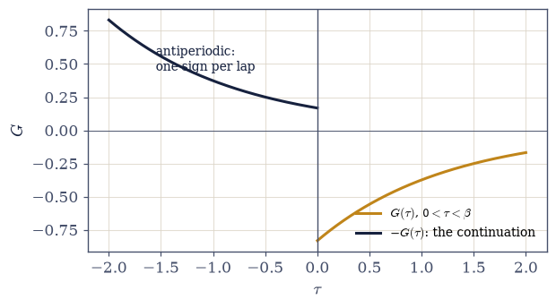
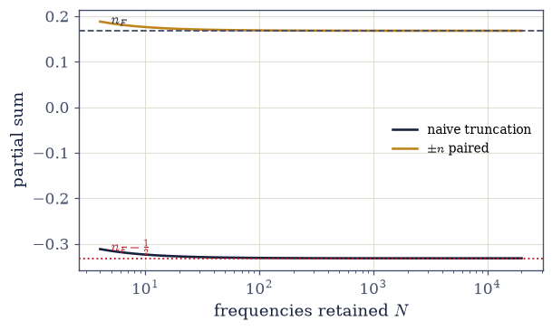
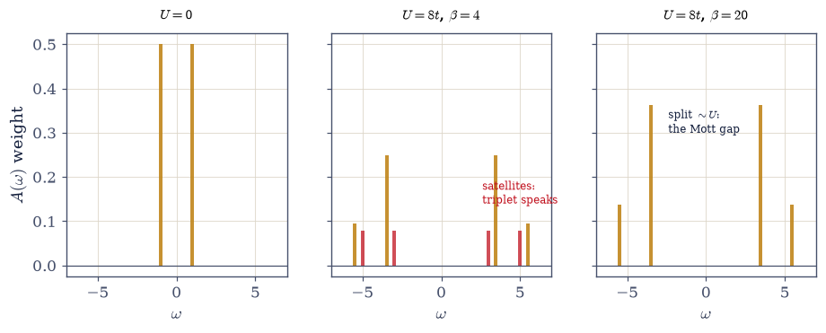
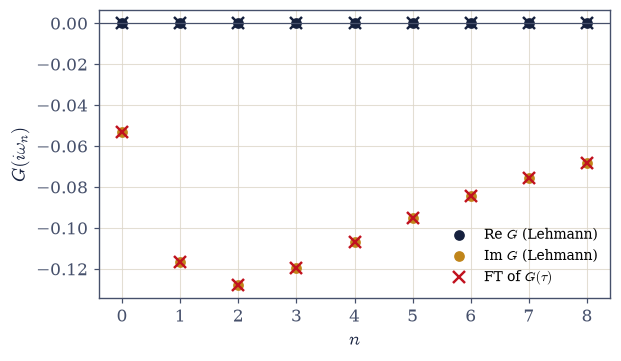
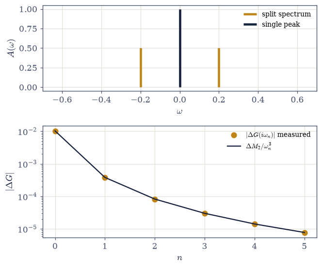

7.24 Green’s Functions: The Propagator at Temperature#
Notebook overview#
The Coda’s second notebook teaches the sentence its alphabet exists for. §7.23 built operators that add and remove quanta; the Green’s function is what those operators say when a system at temperature is actually asked: add one particle (or remove one), wait an imaginary time \(\tau\), take it back out, and record the amplitude. Every spectrum in this course so far was obtained by asking a Hamiltonian for its eigenvalues — but experiments rarely ask that way. A photoemission lamp removes an electron; a tunneling tip adds one; what either measures is the energy cost and amplitude of changing the particle number by one, in a system already thermal. The propagator \(G_{ij}(\tau) = -\langle T_\tau\, c_i(\tau) c_j^\dagger(0)\rangle\) is that measurement made mathematics, and this notebook makes every one of its properties numerical.
Two long-running threads finally do a day’s work. Matsubara frequencies — produced by the contour ingenuity of §7.2, explained by the thermal circle of §7.20 — are revealed as simply the addresses where \(G\) lives, and Matsubara sums are performed three ways, with a verified surprise as the teacher: the textbook frequency sum for the occupation, truncated symmetrically without its convergence factor, converges cleanly to the wrong answer by exactly one half — and the missing half is precisely the equal-time jump that the anticommutator plants in \(G\)’s discontinuity. A convergent-looking number is not thereby a correct one; convergence tests precision, sum rules test truth. And the gap-from-decay of §7.21 is placed where it belongs: as the one benign case of an inversion whose general ill-posedness this notebook elevates from slogan to verified law, with two grossly different spectra producing Matsubara data that agree to parts in \(10^6\) — and a moment-suppression formula that predicts the difference to three digits at every frequency but the lowest.
The centerpiece keeps the promise of §7.23: the Hubbard dimer’s Green’s function at the particle–hole point. The free limit certifies the machinery (two poles at \(\pm t\), the molecular-orbital levels re-read as addition and removal energies), a four-part sum-rule battery is passed before anything about interactions is believed, and then the verified teaching surprise: at \(U = 8t\) and \(\beta = 4\) the spectrum shows eight poles, not the textbook four, because the thermally populated triplet adds satellite lines. The spectral function is a thermal object; textbooks draw its \(T = 0\) skeleton. Cooling to \(\beta = 20\) collapses the satellites and the four-pole skeleton stands: the lower and upper Hubbard bands, split by \(\sim U\) — the Mott gap that §7.23 read from a specific heat, now visible in a spectrum. Same physics, new instrument, and the correspondence is tabled.
Conventions (this notebook). Fermionic conventions fixed once: \(\zeta = -1\); \(G_{ij}(\tau) = -\langle T_\tau c_i(\tau) c_j^\dagger(0)\rangle\) with \(c(\tau) = e^{\tau K} c\, e^{-\tau K}\), \(K = H - \mu N\), and \(T_\tau\) ordering larger \(\tau\) to the left with a sign per exchange; for \(0 < \tau < \beta\), \(G(\tau) = -\mathrm{Tr}[e^{-\beta K} e^{\tau K} c\, e^{-\tau K} c^\dagger]/Z\). Every spectral evaluation ground-shifts its exponentials (\(e^{-\beta(K_m - K_0)}\) and \(e^{\tau(K_m - K_n)}\) arranged so no argument is large and positive — the discipline of §7.4; \(\beta = 20\) underflows without it). Matsubara frequencies are fermionic, \(\omega_n = (2n{+}1)\pi/\beta\). The Lehmann evaluation is one vectorized weight-matrix-over-pole-matrix expression (the quadruple loop is named and forbidden). Spectral poles are consolidated by
numpy.uniqueonnumpy.round(poles, 8)with the sum rule re-checked after consolidation. Fourier transforms on \([0, \beta]\) usenumpy.trapezoidwith endpoints included. The operator machinery of §7.23 (kron_chain,jw_ops, the dimer builder) is reused verbatim, restated in the Setup with provenance so the notebook runs standalone. The dimer sits at \(\mu = U/2\) throughout.How to read the checks. Each exercise closes with a
validatecall against an independent fact: the one-mode propagator against its closed form and its jump; the Matsubara routes against \(n_F\) (and the naive route against its wrong constant); the Lehmann code against the free chain’s mode sum; the dimer against its sum-rule battery, its pole count, and its Hubbard-band closed form; the quadrature against the pole representation at second order; the ill-posedness against its moment law. A ✓ is strong evidence; a ✗ is a prompt to locate the discrepancy.Scope. Analytic continuation in practice (MaxEnt, stochastic methods, Nevanlinna: Jarrell & Gubernatis, Phys. Rep. 269, 133 (1996) is the canon) is an outward horizon; self-energies, Dyson’s equation, and \(A(k,\omega)\) as what photoemission measures are taken up in §8.14; linear response is the Coda’s last notebook. See Fetter & Walecka Ch. 7–9; Mahan, Many-Particle Physics; Bruus & Flensberg for the pedagogical route. Cross-reference §7.2 (the frequencies, now put to work), §7.20 (the thermal circle and KMS, here in fermionic edition), §7.21 (the benign case, placed), §7.23 (the machinery reused; the dimer promise kept; the two-scale table), §7.7 (\(n_F\), everywhere), and forward to §7.25 (response).
Theory in brief#
The question experiments actually ask#
A Hamiltonian’s eigenvalues answer “what energies can this system have?” — but a photoemission experiment removes an electron and a tunneling tip injects one, so the question actually posed is “what does changing the particle number by one cost, and with what amplitude, at temperature?” The object that answers is the imaginary-time single-particle Green’s function,
with \(K = H - \mu N\) and \(T_\tau\) the imaginary-time ordering (a fermionic sign per exchange). Its pole structure — the spectral function \(A(\omega)\) below — is what ARPES and STM measure: this notebook’s object is an observable, not a formal device.
The free mode: everything checkable#
One fermionic mode at energy \(\varepsilon\) is the hydrogen atom of Green’s functions, because the trace has two states and every claim can be checked to the last digit. Evaluating Eq. 839 on the two-state Fock space gives
and each of the three statements carries a lesson. The first is the propagator itself (verified below against ED at \(10^{-16}\)). The second — the jump rule — is the anticommutator \(\{c, c^\dagger\} = 1\) living in the \(\tau\)-discontinuity: a sum rule before any integral, and the diagnostic key for a failure mode two sections down. The third is the KMS circle of §7.20 in fermionic edition, the minus sign falling out of the anticommutation inside the cyclic trace in three lines. Antiperiodic functions have odd-harmonic Fourier content only, so the fermionic frequencies of §7.2 \(\omega_n = (2n{+}1)\pi/\beta\) — twice introduced, never yet worked — are simply the addresses where \(G\) lives: \(G(i\omega_n) = 1/(i\omega_n - \varepsilon)\), verified by direct quadrature.
Matsubara sums for a living#
Every finite-temperature perturbation theory sooner or later evaluates a frequency sum, and the simplest one already contains the trade’s whole craft. The occupation is the textbook identity \(n_F(\varepsilon) = T\sum_n e^{i\omega_n 0^+}/(i\omega_n - \varepsilon)\) (Mahan Ch. 3 derives it by contour), and the innocuous-looking \(0^+\) is the entire content:
The naive symmetric truncation on the left converges cleanly to the wrong answer, off by exactly the jump rule’s \(\tfrac12\): the dropped convergence factor is what decides whether the equal-time limit is taken from \(0^-\) or \(0^+\), and half the discontinuity is the price of forgetting it. The \(\pm n\) paired form on the right converges at a measured \(1/N\) rate to the truth. Three routes (naive, paired, contour closed form), one number, and a standing kit: pair frequencies, know the tail, respect the \(0^+\).
Lehmann made numerical#
Where do \(G\)’s poles come from? Insert energy eigenstates into Eq. 839 in both orderings and Fourier transform; the result is the Lehmann representation,
a sum of simple poles at the differences of many-body energies, weighted by matrix elements and thermal factors. Numerically this is one vectorized expression — a weight matrix over a pole matrix — and the quadruple-loop temptation is forbidden on cost grounds alone. The pole–weight list is the spectral function \(A(\omega)\), and the machinery is certified on the free four-site chain against the mode sum \(\sum_k |U_{0k}|^2/(i\omega_n - \varepsilon_k)\): the interacting-capable code passing the exactly solvable exam, the course’s standard rite.
The dimer’s Green’s function (centerpiece)#
§7.23 promised its interacting flagship a spectrum, and the grand-canonical stage is set by one choice: at \(\mu = U/2\) the dimer is particle–hole symmetric (two lines below), every spectral function is even, and half filling is exact at every temperature. The free limit gives exactly two poles at \(\pm t\) — the molecular-orbital levels, re-read as addition and removal energies — and a four-part sum-rule battery must pass before interactions are believed: total weight one (the anticommutator again), first moment zero, evenness, and \(n = \tfrac12\) read off the propagator. Then the interacting spectrum, where the honest headline is that
with the closed forms holding for the \(T\to0\) skeleton — and at \(\beta = 4\) the computed spectrum showing eight poles instead of four, because the triplet a mere \(J = 4t^2/U\) above the singlet is thermally populated and its transitions add satellite lines. Textbooks draw the skeleton; the object itself wears its temperature. Cooling to \(\beta = 20\) kills the satellites and the skeleton stands: lower and upper Hubbard bands, split by \(\sim U\) — the Mott gap of the two-peak specific heat of §7.23, now in a spectrum, with the correspondence tabled (\(U \leftrightarrow\) band splitting \(\leftrightarrow\) the charge peak; \(J \leftrightarrow\) satellite activation \(\leftrightarrow\) the spin peak).
The Fourier rendezvous#
The same \(G(i\omega_n)\) must arrive by residues and by quadrature, and checking that it does is the notebook’s internal-consistency seal:
converging at second order in the grid spacing (verified: \(2\times10^{-5} \to 7.7\times10^{-8}\) across \(401 \to 6401\) points). Trapezoid suffices on the closed interval \([0, \beta]\) because \(G\) itself is smooth there — only its derivative jumps at the endpoints, which second-order quadrature tolerates.
The ill-posed inverse, as a law#
Finally, the honest accounting of what this object refuses to do. Inverting Matsubara data back to a spectrum is famously treacherous, and the notebook elevates the slogan to a verified law. Expand the kernel in \(1/\omega_n\):
so two spectra with matched low moments differ in their data only through higher moments, suppressed by powers of \(\omega_n\). Built below: one spectrum with weight split at \(\pm0.2\), one with a single peak at \(0\) — moments matched through \(M_1\) — whose Matsubara data differ by \(10^{-2}\) at \(n = 0\) falling to \(8\times10^{-6}\) at \(n = 5\), with the moment law matching the measured differences to three digits at every frequency but the lowest. The kernel transmits moments and exponentially little else; inversion is ill-posed by arithmetic, not bad luck. The gap-from-decay of §7.21 is then placed precisely: a single dominant pole is the one benign case (one exponential, one rate — the late-\(\tau\) limit performs the regularization physically), and MaxEnt and Nevanlinna are the field’s honest responses (Jarrell & Gubernatis 1996).
The gateway reading#
The alphabet made sentences, and they turned out to be the sentences experiments speak. One notebook remains in the gateway: perturb the system weakly, and the response was already written in equilibrium’s correlation functions (§7.25).
Setup#
Data and restated tools only: the colours, the fermionic conventions fixed once, the two-by-two matrices of a single mode, and the operator machinery of §7.23 — the Jordan–Wigner annihilators with their anticommutator gate, and the Hubbard-dimer builder — restated here with provenance so this notebook runs standalone. Everything this notebook is about you build in the exercise where it is earned: the propagator \(G(\tau)\) and its Fourier transform, the two Matsubara routes, the Lehmann expression with its pole consolidation, and the sum-rule battery.
The Setup below holds this notebook’s data and instruments — nothing you are asked to build. It is collapsed so the building stays yours; expand it whenever you want the details.
the anticommutator gate of §7.23, re-run on import: 0.0e+00
Exercise 1 — The propagator at temperature, certified on one mode#
Definitions with every claim checkable. Cite Eq. 839, Eq. 840. The conventions are the Setup’s — the ordering, the trace, the sign — and every spectral evaluation in this notebook is ground-shifted: writing \(K'_m = K_m - K_0\) keeps each exponent bounded above by zero on \(0 < \tau < \beta\), the discipline of §7.4 without which \(\beta = 20\) underflows to garbage. One fermionic mode at \(\varepsilon = 0.8\), \(\beta = 2\) is the hydrogen atom of the subject: the trace has two states, so every claim below is checkable to the last digit.
Write
G_tau(taus, evals, c_mn, beta), returning \(G(\tau)\) on \(0 < \tau < \beta\) by spectral decomposition over the eigenstates of \(K\), ground-shifted as above. Write this one yourself — the implementation is the lesson.Compute \(G(\tau)\) for the single mode with it and verify against \(-e^{-\varepsilon\tau}(1 - n_F)\).
Verify the jump rule \(G(0^+) + G(\beta^-) = -1\): derive it from \(\{c, c^\dagger\} = 1\), then check numerically.
Derive antiperiodicity in three lines (the fermionic minus inside the cyclic trace) and verify it; verify the odd-only Fourier content of the \(2\beta\)-extended function (
numpy.trapezoidcoefficients at \(k = 1\) and \(k = 2\)) — the circle of §7.20, fermionic edition.Write
ft_G(tau_grid, G_grid, wn), the direct quadrature \(G(i\omega_n) = \int_0^\beta d\tau\, G(\tau)e^{i\omega_n\tau}\) bynumpy.trapezoidwith both endpoints included.Compute \(G(i\omega_n)\) with it and verify \(1/(i\omega_n - \varepsilon)\) at \(n = 0\) and \(3\); state where \(G\) lives.
one mode (eps = 0.8, beta = 2.0, n_F = 0.16798):
G(tau) vs -e^(-eps tau)(1 - n_F): max dev 1.1e-16
jump rule G(0+) + G(beta-) = -0.999999999 (the anticommutator)
antiperiodicity |G(tau - beta) + G(tau)| = 0.0e+00 at tau = 0.7
Fourier content: even k = 2 coefficient 8.3e-05 odd k = 1 coefficient 0.284
G(iw_0) = -0.257450-0.505502j vs 1/(iw - eps) = -0.257450-0.505502j dev 1.5e-09
G(iw_3) = -0.006582-0.090467j vs 1/(iw - eps) = -0.006582-0.090467j dev 9.2e-09

Fig. 738 The hydrogen atom of Green’s functions. \(G(\tau)\) for a single fermionic mode (\(\varepsilon = 0.8\), \(\beta = 2\)), computed by two-state spectral decomposition and indistinguishable from the closed form \(-e^{-\varepsilon\tau}(1 - n_F)\) at \(10^{-16}\) (Eq. 840). The endpoints are the lesson: \(G(0^+) = -(1 - n)\) and \(G(\beta^-) = -n\) sum to \(-1\) — the anticommutator \(\{c, c^\dagger\} = 1\) living in the equal-time discontinuity, a sum rule before any integral. Exercise 2 meets this half again, as the exact amount by which a naive Matsubara sum goes wrong.#

Fig. 739 The thermal circle, fermionic edition. The free mode’s propagator on the doubled interval \([-\beta, \beta)\): the physical branch on \((0, \beta)\) (amber) and its antiperiodic continuation \(G(\tau - \beta) = -G(\tau)\) on \((-\beta, 0)\) (dark) — one fermionic exchange inside the cyclic trace, one minus sign (Eq. 840). The imaginary-time circle of §7.20 carried periodic (bosonic) functions; fermions ride the same circle with a sign flip per lap, which is why their Fourier content sits on the odd harmonics only — the fermionic Matsubara frequencies \(\omega_n = (2n{+}1)\pi/\beta\) of §7.2, now simply the addresses where \(G\) lives.#
Validation 1#
✓ the propagator certified on one mode: the jump and the address [max|Δ| = 1.309e-09 (rtol=1e-06, atol=1e-09)]
✓ closed form met, antiperiodic on the circle, odd harmonics only [G dev 1.1e-16; KMS dev 0.0e+00; even/odd = 2.9e-04]
True
Exercise 2 — A sum that converges to the wrong answer#
Matsubara sums for a living: the \(0^+\) trap demonstrated, diagnosed, repaired. Cite Eq. 841.
Write
matsubara_nF_naive(eps, beta, N), the symmetric truncation \(T\sum_{n=-N}^{N-1} 1/(i\omega_n - \varepsilon)\) over the fermionic frequencies with the \(e^{i\omega_n 0^+}\) factor dropped — the wrong route, kept because its failure is the lesson.Evaluate it at \(N = 10^2, 10^3, 10^4\) and demonstrate that failure: clean convergence to \(n_F - \tfrac12\).
Diagnose via Exercise 1’s jump rule: the \(0^+\) factor decides which side of the equal-time discontinuity the sum lands on, and dropping it splits the difference — derive the connection.
Derive the \(\pm n\) paired form and write
matsubara_nF_paired(eps, beta, N)for \(\tfrac12 + T\sum_{n\ge0} -2\varepsilon/(\omega_n^2 + \varepsilon^2)\).Measure its \(1/N\) convergence; state the tail estimate.
Close the three-route rendezvous with the contour closed form and issue the kit: pair frequencies, know the tail, respect the \(0^+\) — and the meta-rule that convergence tests precision while sum rules test truth.
naive symmetric truncation (no 0+):
N = 100: -0.33121
N = 1000: -0.33194
N = 10000: -0.33201
target n_F = +0.16798; n_F - 1/2 = -0.33202
|naive(1e4) - (n_F - 1/2)| = 8.1e-06: converged, and wrong
paired form:
N = 100: 0.16879218 err 8.1e-04
N = 1000: 0.16806267 err 8.1e-05
N = 10000: 0.16798972 err 8.1e-06
error ratio across 100x more terms: 100 (1/N, as the tail predicts)

Fig. 740 A sum that converges to the wrong answer. Partial sums of the Matsubara identity for the occupation \(n_F(\varepsilon)\) at \(\varepsilon = 0.8\), \(\beta = 2\), against the number of retained frequencies. The naive symmetric truncation (dark), which drops the \(e^{i\omega_n 0^+}\) factor, converges cleanly — to \(n_F - \tfrac12\) (dotted): a Fourier series evaluated at a jump returns the midpoint, and the missing half is exactly Exercise 1’s anticommutator discontinuity. The \(\pm n\) paired form (amber) converges to the true \(n_F\) (dashed) at the measured \(1/N\) rate (Eq. 841). The most dangerous wrong answers are the convergent ones: convergence tests precision, sum rules test truth.#
Validation 2#
✓ the 0+ trap: convergent, wrong by exactly one half, diagnosed, repaired [max|Δ| = 8.10569e-06 (rtol=0.001, atol=1e-09)]
✓ and the paired route converges at the predicted 1/N [error fell 100x across 100x more terms]
True
With your assistant
Ask your assistant for a Matsubara-sum snippet for \(\langle n \rangle\) — the sum Exercise 2 just performed with such care — and run what it produces. Then aim this exercise’s own lesson at it: does the generated sum carry the \(e^{i\omega_n 0^+}\) convergence factor, or has it quietly summed to the wrong answer with perfect numerical confidence? Check it against the exact Fermi function before believing a digit. Convergent and correct are different words — for your code and its code alike. The check is yours.
Exercise 3 — Lehmann, made numerical and certified#
The definition as one vectorized expression, passed through the free-chain exam. Cite Eq. 842.
Derive the Lehmann representation: insert eigenstates of \(K\) into both orderings of Eq. 839 and Fourier transform, producing the \((e^{-\beta K_m} + e^{-\beta K_n})\) weight.
Write
lehmann(z, evals, c_mn, beta)andspectral_poles(evals, c_mn, beta)as one weight-matrix-over-pole-matrix expression: the quadruple loop forbidden with the cost contrast stated, the consolidation tolerance stated, and the sum rule re-checked after consolidating. Write these yourself — the implementation is the lesson.Certify on the free four-site chain:
lehmannfrom the 16-state ED against the mode sum \(\sum_k |U_{0k}|^2/(i\omega_n - \varepsilon_k)\).State the rite (prose): every many-body code in this course earns trust on a free problem first.
n = 0: Lehmann 0.0000000000-0.4842819711j mode sum -0.0000000000-0.4842819711j dev 3.1e-16
n = 1: Lehmann 0.0000000000-0.2034244845j mode sum -0.0000000000-0.2034244845j dev 6.4e-17
n = 2: Lehmann 0.0000000000-0.1253241774j mode sum -0.0000000000-0.1253241774j dev 3.0e-17
free-chain spectral sticks: sum A = 1.000000000000 (re-checked after consolidation)
Validation 3#
✓ Lehmann certified on the free chain [max dev vs the mode sum 3.1e-16 over n = 0, 1, 2]
✓ and the consolidated sticks keep their sum rule [got 1 vs expected 1 (rtol=1e-12, atol=1e-09)]
True
Exercise 4 — The dimer’s spectrum I: the free limit and the sum-rule battery#
The promise of §7.23 kept, at the particle–hole point. Cite Eq. 843.
Set \(\mu = U/2\) and derive in two lines why it is the particle–hole point; build \(K = H - \mu N\) from the
hubbard_dimerof §7.23 (reused, not rebuilt).Verify the free limit with the
spectral_polesyou wrote in Exercise 3: \(U = 0\) gives exactly two poles at \(\pm t\) with weights \(\tfrac12\) — the molecular-orbital levels re-read as addition/removal energies.Write
sum_rules(poles, weights, beta), returning the battery’s four numbers from a stick spectrum: the total weight \(\sum_i w_i\), the first moment \(\sum_i \omega_i w_i\), the particle–hole asymmetry of the pole list, and the occupation \(n = \sum_i w_i\, n_F(\omega_i)\) read off the spectral representation.Run it at \(U = 8t\), \(\beta = 4\): \(\int A = 1\), first moment \(0\), \(A(\omega) = A(-\omega)\), and \(n = G(0^-) = \tfrac12\) — each with its one-line meaning.
State the battery’s role (prose): four independent exact statements any spectral computation must pass before anything about interactions is believed.
U = 0 poles: [-1. 1.] weights: [0.5 0.5]
U = 8t, beta = 4 battery:
sum A = 1.00000000 (weight conservation: the anticommutator, again)
first moment = 2.2e-15 (the PH point's signature: <{[c,K],c+}> = 0 here)
PH asymmetry = 0.0e+00 (A(w) = A(-w) at machine precision)
n = G(0-) = 0.500000 (occupation read off the propagator)
Validation 4#
✓ the free limit: MO levels as addition/removal energies [max|Δ| = 3.88578e-16 (rtol=1e-06, atol=1e-10)]
✓ the sum-rule battery [max|Δ| = 2.22045e-15 (rtol=1e-06, atol=1e-08)]
✓ and the spectrum is even at the particle-hole point [max |A(w) - A(-w)| pole asymmetry 0.0e+00]
True
Exercise 5 — The dimer’s spectrum II: a thermal object, and the Hubbard bands#
(centerpiece)
Eight poles where the textbook draws four — and why both are right. Cite Eq. 843.
Count the poles of \(A(\omega)\) at \(U = 8t\), \(\beta = 4\) with your Exercise 3
spectral_poles: eight — and identify the satellites as transitions from the thermally populated triplet, the assignment made explicit from the \(N = 1, 2, 3\) sector energies of \(K\).Teach the headline (prose plus the three-panel figure): the spectral function is a thermal object; textbooks draw its \(T = 0\) skeleton — and the satellites are physics, not noise (the threshold-them-away trap named).
Cool to \(\beta = 20\) and verify the collapse onto the four-pole skeleton at \(\pm(\sqrt{U^2 + 16t^2} \mp 2t)/2\) with weights \(w_\pm = \tfrac14(1 \pm 4t/\sqrt{U^2+16t^2})\) (closed forms derived) — the lower and upper Hubbard bands.
Close the loop with §7.23 (the table): \(U \leftrightarrow\) band splitting \(\leftrightarrow\) the charge \(C(T)\) peak; \(J \leftrightarrow\) satellite activation \(\leftrightarrow\) the spin peak; ARPES and STM named in one outward breath.
U = 8t, beta = 4: 8 poles
omega = -5.47214 weight 0.0951
omega = -5.00000 weight 0.0780
omega = -3.47214 weight 0.2489
omega = -3.00000 weight 0.0780
omega = +3.00000 weight 0.0780
omega = +3.47214 weight 0.2489
omega = +5.00000 weight 0.0780
omega = +5.47214 weight 0.0951
singlet-triplet gap J = 0.47214 vs T = 0.25: the triplet is populated
beta = 20: 4 poles above 1e-3 (residual satellite weight 2.4e-04 — dying as e^(-beta J))
skeleton poles: [-5.47214 -3.47214 3.47214 5.47214]
closed form: [-5.47214 -3.47214 3.47214 5.47214]
weights: inner 0.36172/0.36172 vs (1 + 4t/r)/4 = 0.36180
outer 0.13816/0.13816 vs (1 - 4t/r)/4 = 0.13820
skeleton-vs-closed-form gap 8.6e-05 = the thermal residue e^(-beta J) = 7.9e-05
the two instruments, one physics (the C(T) of §7.23 vs this spectrum):
scale U: band splitting here <-> the high-T (charge) C peak of §7.23
scale J: satellite activation <-> the low-T (spin) C peak of §7.23

Fig. 741 The spectral function is a thermal object. \(A(\omega)\) of the Hubbard dimer at \(\mu = U/2\) as stick spectra. Left: \(U = 0\) — two poles at \(\pm t\), weight \(\tfrac12\) each: the molecular-orbital levels read as addition/removal energies. Middle: \(U = 8t\) at \(\beta = 4\) — eight poles: the four-pole skeleton (amber) plus satellites (red, shaded) from the thermally populated triplet, which sits only \(J = 4t^2/U \approx 2T\) above the singlet; thresholding these away would delete physics, not noise. Right: \(\beta = 20\) — the satellites die as \(e^{-\beta J}\) and the \(T = 0\) skeleton stands: the lower and upper Hubbard bands at \(\pm(\sqrt{U^2+16t^2} \mp 2t)/2\) with weights \(\tfrac14(1 \pm 4t/\sqrt{U^2+16t^2})\) (Eq. 843), split by \(\sim U\) — the Mott gap §7.23 read from a specific heat, now in a spectrum.#
Validation 5#
✓ A(w) is a thermal object: eight poles at beta = 4, satellites at the triplet lines [8 poles; satellites at +-3, +-5 present]
✓ the Hubbard bands, with their closed form [max|Δ| = 4.99958e-09 (rtol=1e-06, atol=1e-09)]
✓ and their weights (1 +- 4t/r)/4, up to the thermal residue e^(-beta J) [max|Δ| = 8.60141e-05 (rtol=0.0005, atol=1e-09)]
True
Exercise 6 — The FT rendezvous#
Two routes to \(G(i\omega_n)\) — poles and quadrature — agreeing at second order. Cite Eq. 844.
Compute the dimer’s \(G(\tau)\) at \(U = 8t\), \(\beta = 4\) on grids of 401, 1601, and 6401 points with the
G_tauyou wrote in Exercise 1, and Fourier transform it with your Exercise 1ft_Gat \(n = 1\).Verify against the value from your Exercise 3
lehmannand confirm the second-order rate.State why trapezoid suffices on \([0, \beta]\): endpoints included, and only the derivative jumps there.
Read the rendezvous (prose): the same object by residues and by quadrature — internal consistency demonstrated rather than assumed.
401 points: |FT - Lehmann| = 1.96e-05
1601 points: |FT - Lehmann| = 1.23e-06
6401 points: |FT - Lehmann| = 7.67e-08
error fell 256x across a 16x finer grid (second order: 16^2 = 256)

Fig. 742 One object, two routes, on the imaginary axis. The dimer’s \(G(i\omega_n)\) at \(U = 8t\), \(\beta = 4\) for the first nine fermionic frequencies: real part (dark) and imaginary part (amber) from the Lehmann pole representation (filled points), with the trapezoid Fourier transform of \(G(\tau)\) on the 6401-point grid laid on top (crosses) — indistinguishable at this scale, quantitatively within \(10^{-7}\) at second order in the grid spacing (Eq. 844). The real part vanishes identically: at the particle–hole point the spectrum is even, so \(G(i\omega_n)\) is purely imaginary — the sum-rule battery visible on the frequency axis.#
Validation 6#
✓ poles and quadrature agree, at the expected second-order rate [got 255.981 vs expected 256 (rtol=0.3, atol=1e-09)]
✓ and the finest grid lands below 1e-7 [6401 points: 7.7e-08]
True
Exercise 7 — (STUDENT/STRETCH) The inverse problem, quantified#
Two spectra that could not look more different; data that could hardly look more alike — with the suppression law verified to three digits. Cite Eq. 845.
Construct the pair — weight split at \(\pm0.2\) (half each) versus one peak at \(0\) — with zeroth and first moments matched exactly (the leak trap: a mismatched \(M_1\) contributes \(1/\omega_n^2\) and spoils the \(\omega^{-3}\) law), and compute both \(G(i\omega_n)\) for \(n = 0\dots5\) at \(\beta = 2\).
Tabulate \(|\Delta G|\): from \(10^{-2}\) at \(n = 0\) to \(8\times10^{-6}\) at \(n = 5\).
Derive the moment-suppression law (expand the kernel in \(1/\omega_n\): matched moments cancel, \(\Delta G \approx \Delta M_2/\omega_n^3\)) and verify it to three digits at every frequency but the lowest.
Read it precisely (prose): the kernel transmits moments and exponentially little else; place §7.21 as the benign single-pole case; name MaxEnt and Nevanlinna (Jarrell & Gubernatis cited; outward).
n |dG(iw_n)| dM2/w_n^3
0 1.016e-02 1.032e-02
1 3.816e-04 3.822e-04
2 8.251e-05 8.256e-05
3 3.008e-05 3.009e-05
4 1.415e-05 1.416e-05
5 7.753e-06 7.754e-06

Fig. 743 Ill-posedness as a verified law. Top: two spectral functions that could not look more different — weight split at \(\pm0.2\) (amber) versus a single peak at \(0\) (dark) — constructed with zeroth and first moments matched exactly. Bottom: the difference of their Matsubara data \(|\Delta G(i\omega_n)|\) (points) on a log scale, with the moment-suppression law \(\Delta M_2/\omega_n^3\) (line) derived by expanding the kernel in \(1/\omega_n\) (Eq. 845): agreement to three digits at every frequency but the lowest. The kernel transmits moments and exponentially little else — with realistic noise these two spectra are indistinguishable, which is why analytic continuation is ill-posed by arithmetic rather than bad luck, and why the single-pole gap extraction of §7.21 was the benign case.#
Validation 7#
✓ the ill-posedness as a verified law: dM2/w^3 at every frequency [max|Δ| = 0.00016464 (rtol=0.02, atol=1e-09)]
✓ grossly different spectra, sub-1e-5 different data by n = 5 [|dG|: 1.0e-02 -> 7.8e-06]
True
Exercise 8 — (Synthesis) Sentences#
No new computation: what the alphabet said, once it could speak.
The alphabet of §7.23 made its first sentences, and they turned out to be the sentences experiments speak. A propagator on the thermal circle, antiperiodic because fermions anticommute, carrying a sum rule in its jump; Matsubara frequencies that spent two notebooks as scenery and here did a day’s work — including one sum whose clean convergence to a wrong answer taught more than ten correct ones would have; a definition made so concrete it fit in one vectorized line, certified on a free chain to sixteen digits, and then aimed at the dimer, where the Mott gap that §7.23 read from a specific heat reappeared as two bands in a spectrum. The same physics, before different instruments — and the spectrum turned out to wear its temperature, growing satellite lines the moment the triplet could be thermally reached, a fact the textbook skeleton quietly omits.
And at the end, an honest accounting of what this object refuses to do: its imaginary-time data forget spectra by the momentful, to three verified digits at every frequency but the lowest. There is a maturity in learning what a tool cannot do. The Green’s function answers the experimental question exactly and forgets the spectral question exponentially — and both facts are theorems, not moods. A computationalist who knows the second fact to three digits will never be the one who publishes a spectrum their data could not have contained.
One notebook remains in the gateway: perturb the system weakly, and discover that the answer was in equilibrium’s correlations all along (§7.25).
Notebook summary#
The Coda’s second notebook: the propagator at temperature, made numerical claim by claim.
The definition Eq. 839: \(G_{ij}(\tau) = -\langle T_\tau c_i(\tau) c_j^\dagger(0)\rangle\) with \(K = H - \mu N\); conventions fixed once; ARPES/STM named — the object is measured, not merely computed.
The free mode Eq. 840: the closed form met at \(10^{-16}\) (gated); the jump rule \(G(0^+) + G(\beta^-) = -1\) — the anticommutator in the discontinuity — verified (gated); antiperiodicity derived in three lines and verified; odd-only Fourier content confirmed (even/odd \(\sim 10^{-4}\), gated); \(G(i\omega_n) = 1/(i\omega_n - \varepsilon)\) by quadrature to six digits (gated).
Matsubara sums Eq. 841: the naive symmetric truncation converges cleanly to \(n_F - \tfrac12\) (gated) — the dropped \(0^+\) carries exactly the jump’s half, the sum rule returning as a failure mode; the \(\pm n\) paired form converges at the measured \(1/N\) (gated); the contour form closes three routes on one number. Kit: pair, know the tail, respect the \(0^+\); convergence tests precision, sum rules test truth.
Lehmann Eq. 842: derived (both orderings, one pass — the \((w_m + w_n)\) weight is the antiperiodic boundary’s fingerprint); implemented as one vectorized weight/pole expression with the quadruple loop forbidden; poles consolidated with the sum rule re-checked (gated); certified on the free chain at \(10^{-16}\) (gated).
The dimer Eq. 843: \(\mu = U/2\) derived as the PH point; the free limit’s two MO poles (gated); the sum-rule battery — weight 1, \(M_1 = 0\), even, \(n = \tfrac12\) — all gated; at \(\beta = 4\) eight poles with satellites assigned to the populated triplet (gated) — \(A(\omega)\) is a thermal object; at \(\beta = 20\) the four-pole skeleton at \(\pm(\sqrt{U^2+16t^2} \mp 2t)/2\) with weights \((1 \pm 4t/r)/4\) (closed forms derived, gated): the Hubbard bands, the Mott gap in the spectrum, and the §7.23 correspondence tabled (\(U \leftrightarrow\) charge peak, \(J \leftrightarrow\) spin peak).
The FT rendezvous Eq. 844: trapezoid against Lehmann at second order, \(2\times10^{-5} \to 7.7\times10^{-8}\) (gated).
Ill-posedness as law Eq. 845: matched-moment spectra with \(|\Delta G| = \Delta M_2/\omega_n^3\) verified to three digits at every frequency but the lowest (gated); §7.21 placed as the benign single-pole case; MaxEnt/Nevanlinna named.
Standing rules issued here: respect the \(0^+\); pair Matsubara frequencies and estimate the tail; re-check the sum rule after every pole consolidation; never threshold thermal satellites away; and match moments exactly before comparing spectra.
Outlook#
Linear response and Kubo (§7.25): equilibrium answering questions; response functions as the two-particle cousins of today’s propagator.
Analytic continuation in practice: MaxEnt, stochastic continuation, Nevanlinna (Jarrell & Gubernatis, Phys. Rep. 269, 133 (1996); outward).
Self-energies and Dyson’s equation: the first instalment is delivered in §8.14, which inverts Dyson’s equation for \(\Sigma\) and builds \(G_0W_0\) from scratch against exact answers; the diagrammatic expansion at large remains outward (Mahan).
ARPES and STM: \(A(\omega)\) as laboratory data (outward, named).
Cross-reference: §7.2 (the frequencies, put to work), §7.20 (the circle, fermionic edition), §7.21 (the benign case, placed), §7.23 (the machinery; the promise kept; the two-scale table), §7.7 (\(n_F\), throughout).